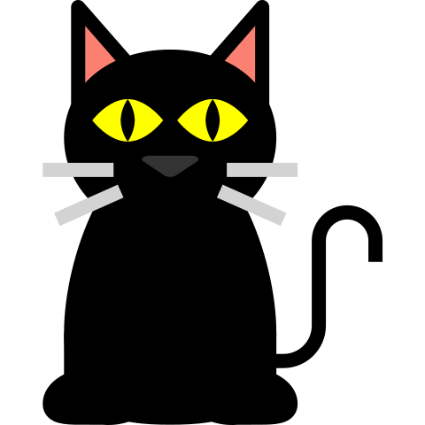

As imagens ajudam a tornar uma página mais visual e podem complementar as informações apresentadas no site.
Para manter o projeto/site organizado, recomenda-se colocar todas as imagens em uma pasta dedicada a isso (normalmente, uma pasta chamada "imagens").
Usamos a tag img para inserir imagens na página.
Com o atributo scr definimos o caminho e nome da imagem que queremos exibir, e com o atributo alt definimos um texto alternativo que serve para a acessibilidade de usuários cegos e para quando a imagem não for carregada por qualquer motivo.

Programação é uma atividade que utiliza lógica

Cuidado pra não enlouquecer.
Usamos a tag figure para agrupar uma ou mais imagens/ilustrações, e a tag figcaption para adicionar uma legenda.
Podemos usar os atributos width ou height para alterar o tamanho de exibição da imagem. Atenção! isso não tornará a imagem mais "leve".

Quando definimos a largura (width), o navegador automaticamente define a altura (height) mantendo as proporções da imagem.


Arquivos SVG poem ser redimensionados sem perda de qualidade.

